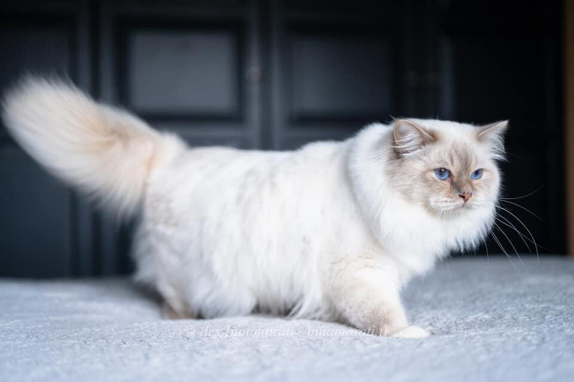

RobeMâle · Lilac tabby point
Naissance12 avril 2019
StatutAdopté
Album1 photos, de janvier 2021 à janvier 2021

Palmarès
1 exposition · 2 jugements2019
- CastetsEXC1
- CastetsEXC1
EXC Excellent (classement) · CAC, CACIB, CAGCIB, CACS certificats de champion, champion international, grand champion international et suprême · CAP, CAPIB, CAGPIB, CAPS équivalents pour les chats stérilisés · BIV meilleur de la variété · NOM nommé pour le Best in Show · BIS Best in Show · BOB Best of Best, le meilleur de toute l’exposition
Photos réduites et marquées. Elles appartiennent à la Chatterie des Innamorati et ne peuvent pas être reprises dans une annonce.